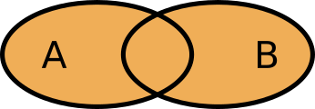
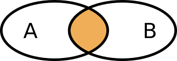
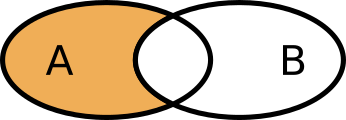
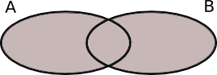
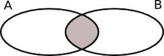

1. Mängder
Inom matematiken talar vi emellan om mängder. Vissa saker kan var lättare att förstå genom att rita upp mängderna. Exempel på en mängd är: äppel, päron, banan, apelsin och kiwi. Ur en mängd framkommer inte mängden element, enskilda saker, som finns i mängden. Mängerna äppel, päron, banan, banan, apelsin och kiwi och äppel, äppel, äppel, päron, banan, apelsin och kiwi representeras av samma mängd: äppel, päron, banan, apelsin och kiwi.
Mängden som består av äppel, päron, banan, apelsin och kiwi betecknas {äppel, päron, banan, apelsin, kiwi}. För ett enstaka element gäller att det tillhör en mängd, tex \( \text{äppel} \in \{\text{äppel, päron, banan, apelsin, kiwi}\} \). Är en mängd tom på element talar vi om den tomma mängden \( \varnothing \).
För mängder finns räkneregler som gör att vi kan arbeta med mängderna. För att illustrera bättre vad vi har använder vi oss av Venn diagram, uppkallade efter John Venn.
Vi tar två mängder: A = {äppel, päron, banan, apelsin}, B = {päron, apelsin, kiwi}.
Unionen av A och B, \( A \cup B \) är alla deras element: {äppel, päron, banan, apelsin, kiwi}.
Grafiskt ser vi på unionen som

Snittet av A och B, \( A \cap B \) är de element som de har gemensamt: {päron, apelsin}.
Grafiskt ser vi på snittet som

Mängddifferensen mellan A och B, \( A \setminus B \) är de element som endast finns i A: {äppel, banan}.
Grafiskt ser vi på mängddifferensen som

Mängder kan ha relationer till varandra, en mängd kan vara en del av en större mängd. Låt A = {äppel, päron, banan, apelsin, kiwi} och B = {äppel, banan}. Då är \( B \subset A \), B är en delmängd av A.
Vi låter mängderna A och B vara som ovan. Om vi tar komplementet av B i A så får vi de element i A som inte finns i B, {päron, apelsin, kiwi}. Komplementet betecknar vi med \( \overline{A} \).
Exempel 1 Låt \( A = \{3,1,4,1,5,9\} \) och \( B = \{2,7,1,8,2,8\} \). Bestäm följande
- Unionen av A och B, \( A \cup B \).
- Snittet av A och B, \( A \cap B \).
- Mängddifferensen av A och B, \( A \setminus B \).
- Låt A och B tillhöra mängden \( \{0,1,2,3,4,5,6,7,8,9\} \). Bestäm \( \overline{A \cup B} \).
Lösning
- \( A \cup B \) är alla elementen i A och B. Alltså \( A \cup B = \{ 1,2,3,4,5,7,8,9\} \).
- \( A \cap B \) är de gemensamma elementen i A och B. Alltså \( A \cap B = \{1 \} \).
- \( A \setminus B \) är de element som endast finns i A. Alltså \( \{3,4,5,9\} \).
- För att bestämma \( \overline{A \cup B} \) bestämmer vi först \( A \cup B \). Det gjorde vi i a). Eftersom \( (A \cup B ) \subset \{0,1,2,3,4,5,6,7,8,9\} \) är det enda element som saknas 0 och 6. Alltså \( \overline{A \cup B} = \{0,6\} \).
Då vi jobbar med större mängder betecknar vi mängderna med hjälp av regler. Då består regeln av hurdana tal som vi använder oss av och regeln vad som gäller för talen.
Exempel 2 Skriv upp elementen i följande mängder.
- \( \{ n \in \mathbf{N} \mid n \leq 10 \} \)
- \( \{ x \in \mathbf{Z} \mid -1 \leq 2x-5 \leq 8 \} \)
- \( \{ \text{Veckans sju dagar} \} \)
Lösning
- Det första kriteriet ger oss att vi jobbar med tal mindre än eller lika med 10. Det andra att elementen skall vara naturliga tal. Alltså \( \{0,1,2,3,4,5,6,7,8,9,10 \} \).
- Olikheten \( -1 \leq 2x-5 \leq 8 \) är samma som \( -3 \leq x \leq 1,5 \). Eftersom talen skall vara heltal är mängden \( \{-3,-2,-1,0,1 \} \).
- \( \{ \text{Veckans sju dagar} \} \) ger oss mängden {måndag, tisdag, onsdag, torsdag, fredag, lördag, söndag}.
Ett element ur en mängd betcknas med \( a \in A \). En tom mängd betecknas med \( \varnothing \).
För mängder gäller följande räkneregler:
- Unionen: då har vi alla element i A och B. Betecknas \( A \cup B \).
- Snittet: då har vi endast de gemensamma elementen i A och B. Betecknas \( A \cap B \).
- Delmäng: vi har en mängd som är en del av en större mängd. Betecknas \( A \subset B \).
- Komplement: de element som inte finns i en mängd. Betecknas \( \overline{A} \).
Uppgifter
- Låt \( A = \{0,2,4,6,8\} \), \( B = \{1, 3,5,7,9 \} \) och \( C = \{0, 1,2,3,4 \} \). Bestäm följande talmängder.
- \( A \cup B \)
\( A \cup B = \{0,1,2,3,4,5,6,7,8,9 \} \)
- \( A \cap B \)
Vi märker att A och B inte har några gemensamma element. Vi talar om att vi har den tomma mängden.
\( A \cap B = \{ \varnothing \}\)
- \( A \cap C \)
\( A \cap C = \{0, 2,4 \}\)
- \( B \cap C \)
\( B \cap C = \{1,3 \} \)
- \( (A \cap C ) \cap B \)
Vi börjar med \( A \cap C = \{0, 2,4 \}\)
Vi får \( (A \cap C ) \cap B = \{ \varnothing \} \), tomma mängden.
- \( (B \cap C ) \cap A \)
Vi börjar med \( B \cap C = \{1,3 \} \)
Vi får \( (B \cap C ) \cap A = \{ \varnothing \}\), tomma mängden.
- \( A \cup B \)
- Låt \( A = \{ 2,4,6,8,10\} \), \( B = \{ 3,6,9 \} \) och \( C = \{ 5,10\} \).
- \( A \cap B \cap C \)
Vi får \( A \cap B \cap C = \{ 6 \} \cap \{5,10\} = \{ \varnothing \}\).
- \( A \cup B \cup C \)
Vi får \( A \cup B \cup C = \{2,3,4,6,8,9,10 \} \cup \{5,10\} = \{2,3,4,5,6,8,9,10\}\).
- \( (A \cap B) \cup (A \cap C) \)
Vi delar in i steg.
\( A \cap B = \{ 6 \} \)
\( A \cap C = \{ 10 \} \)
Alltså \( (A \cap B) \cup (A \cap C) = \{6,10\}\).
- \( (A \cup B) \cap (A \cup C) \)
Vi delar in i steg.
\( A \cup B = \{ 2,3,4,6,8,9,10 \} \)
\( A \cup C = \{ 2,4,5,6,8,10 \} \)
Alltså \( (A \cup B) \cap (A \cup C) = \{2,4,6,8,10\}\).
- \( (A \setminus B) \cup (B \setminus A) \)
Vi delar in i steg.
\( A \setminus B = \{ 2,4,8,10 \} \)
\( B \setminus A = \{ 3,9 \} \)
Alltså \( (A \setminus B) \cup (B \setminus A) = \{2,3,4,8,9,10\}\).
- \( C \cap (A \setminus C) \)
Vi får \( C \cap (A \setminus C) = C \cap \{2,4,6,8\} = \{ \varnothing \} \).
- \( A \cap B \cap C \)
- Vilka av följande påståenden är sanna om \( A = \{2,3,5\} \) och grundmängden är \( \mathbf{Z}_+ = \{1,2,3,\ldots\} \).
- \( 3 \in A \)
Sant, eftersom \( A = \{2,3,5\} \).
- \( 4 \in A \)
Falskt, eftersom \( A = \{2,3,5\} \).
- \(5 \not\in A \)
Falskt, 5 är ett element i A.
- \(6 \not\in A \)
Sant, 6 är inte ett element i A.
- \( \{3 \} \subset A \)
Sant, eftersom \( A = \{2,3,5\} \)
- \( \{4 \} \subset A \)
Falskt, eftersom \( A = \{2,3,5\} \)
- \( 3 \subset A \)
Falskt, eftersom 3 inte är en mängd.
- \( 4 \subset A \)
Falskt, eftersom 4 inte är en mängd.
- \( \{ 5 \} \in A \).
Falskt, eftersom \( \{ 5 \} \) är en mängd, inte ett element.
- \( \{ 5 \} \in A \).
Falskt, eftersom \( \{ 6 \} \) är en mängd, inte ett element.
- \( \{2,3,5 \} \subset A\)
Sant. Egentligen borde vi beteckna med \( \subseteq \) då vi har exakta mängden.
- \( \varnothing \subset A \)
Sant, eftersom tomma mängden alltid är en mängd i en annan mängd.
- \( A \in \mathbf{Z}_+ \)
Falskt eftersom A är en mängd.
- \( A \subset \mathbf{Z}_+ \)
Sant, eftersom A är en delmängd av heltalen.
- \( 3 \in A \)
- Bestäm komplementmängden till \( A = \{2,4,5,6\} \), om universalmängden \( U \) består av
- \( U = \{0,1,2,3,4,5,6\} \)
Vi får \( \overline{A} = \{0,1,3 \} \).
- \( U = \{2,3,4,5,6,7,8,9\} \)
Vi får \( \overline{A} = \{3,7,8,9 \} \).
- \( U = \{0,1,2,3,4,5,6\} \)
- Låt \( A = \{a, b,c\} \), \(B=\{b,c,d\}\) och \(C=\{c,d,e\}\). Vilken mängd beskriver uttrycket?
Påstående \( \{ c \} \) \( \{b, c\} \) \( \{c, d\} \) \( \{a, b, c, d\} \) \( \{b, c, d, e\} \) \( A \cup B \) \( A \cap B \) \( A \cap B\cap C \) \( B \cup C \) \( (A \cup B) \cap C \) \( A \cup (B \cap C) \) Vi får
Påstående \( \{ c \} \) \( \{b, c\} \) \( \{c, d\} \) \( \{a, b, c, d\} \) \( \{b, c, d, e\} \) \( A \cup B \) \( A \cap B \) \( A \cap B\cap C \) \( B \cup C \) \( (A \cup B) \cap C \) \( A \cup (B \cap C) \) - Kombinera rätt beteckning med rätt Venn diagram.
Välj bland uttrycken:
\( A \cup B \)\( \overline{A \cap B} \)\( \overline{A \cup B} \)\( \overline{A} \cup B \)\( A \cap B \)\( A \cap \overline{B} \)Beteckning Venn diagram   


Vi får
Beteckning Venn diagram \( A \cup B \) \( A \cap B \) \( \overline{A \cup B} \) \( \overline{A} \cup B \) \( \overline{A \cap B} \) \( A \cap \overline{B} \) - Följande uppgift handlar om talmängder.
- Börja med att repetera talmängder. Vilka finns det och vilka tal hör till respektive talmängd?
Talmängderna är
- Naturliga tal, \( \mathbf{N}, 0, 1, 2, 3, \ldots \)
- Heltal, \( \mathbf{Z}, \ldots, -2,-1,0,1,2,\ldots \)
- Rationella tal, \( \mathbf{Q}, \dfrac{m}{n} \) så att \(m \) och \(n \) är heltal och \( n \not= 0\).
- Reella tal, \( \mathbf{R} \). Alla tal ovan och dessutom tex \( \pi, \sqrt{2} \).
- Komplexa tal, \( \mathbf{C} \). Alla tal ovan och dessutom de tal som tex löser ekvationen \( x^2 = -1 \).
- Ordna talmängderna så att det framkommer vilken talmäng är delmängd till vilken talmängd.
Eftersom varje talmängd är en fortsättning, utvidgning, av föregående får vi följande.
Vi får \( \mathbf{N} \subset \mathbf{Z} \subset \mathbf{Q} \subset \mathbf{R} \subset \mathbf{C} \).
- Hur många element innehåller varje talmängd? Ordna talmängderna i storleksordning.
Uppgiften är inte så lätt som man först tror. Eftersom varje talmängd har oändligt många element är frågan att kan man jämföra oändliga mängder.
För att jämföra storleken på mängder talar man om kardinalitet. Läs artikeln på Wikipedia om Kardinalitet och fundera sedan på storleken av talmängderna.
- Börja med att repetera talmängder. Vilka finns det och vilka tal hör till respektive talmängd?
- Skriv upp elementen i följande talmängder.
- \( \{ n \in \mathbf{Z} \mid -3 \leq 4n+1 \leq 15 \} \)
Kriteriet \( -3 \leq 4n +1 \leq 15 \) är samma som \( -1 \leq n \leq 3,5 \).
Efterom talen är heltal är mängden \( \{-1, 0,1,2,3 \} \).
- \( \{ x \in \mathbf{Q} \mid x^2 = 2 \} \)
Kriteriet \( x^2=2 \) ger att \( x = \pm\sqrt{2} \).
Eftersom talen är rationella tal är mängden tom, \( \{ \varnothing \} \).
- \( \{ x \in \mathbf{R} \mid x^2 = 2 \} \)
På motsvarande sätt som ovan, talen som duger är \( x= \pm \sqrt{2} \). Nu är talen som vi jobbar med reella tal. Alltså \( \{-\sqrt{2}, \sqrt{2} \} \).
- \( \{ n \in \mathbf{N} \mid n \leq 10, \sqrt{n} \in \mathbf{N} \} \)
Kriteriet \( n \leq 10 \) betyder att vi arbetar med tal mindre än 10. Kriteriet \( \sqrt{n} \in \mathbf{N} \) ger oss att värdet av kvadratroten är naturligt. Alltså är mängden \( \{0,1,4,9\} \).
- \( \{ n \in \mathbf{Z} \mid -3 \leq 4n+1 \leq 15 \} \)
Med beteckningen \( A \times B \) menas den karteiska produkten för två mängder. Då bildar vi alla par som vi kan baserat på mängderna \( A \) och \( B \) så att vi först väljer från \( A \) och sedan från \( B \).
Då \( A = \{1,2\} \) och \( B = \{3,4\} \) är \( A \times B = \{(1,3), (1,4), (2,3), (2,4) \} \). Märk att \( A \times B \) sällan är samma som \( B \times A \).
Låt \( A = \{a\} \), \( B = \{1,2\} \), \( C = \{x,y,z\} \) och \( D = \{\varnothing \} \). Bilda följande karteiska produkter.
- \( A \times B \)
Vi får \( A \times B = \{(a,1), (a,2) \}\).
- \( A \times B \times C\)
Vi får \( A \times B \times C = \{(a,1,x), (a,1,y), (a,1,z), (a,2,x), (a,2,y), (a,2,z) \}\).
- \( B \times C \)
Vi får \( B \times C = \{(1,x), (1,y), (1,z), (2,x), (2,y), (2,z) \}\).
- \( B \times D \)
Eftersom \( D \) är tomma mängden är \( B \times D = \{\varnothing \} \).
- \( A \times B \)